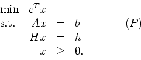
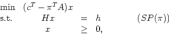
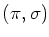
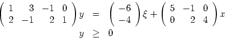
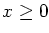
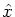
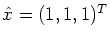

We solve this problem by Dantzig-Wolfe decomposition, so the subproblems are of the form

where  is the current dual solution to the Master Problem. Assume the current subproblem has an optimal solution

where  is the first stage variable, is a random variable which can take values in the interval [0,1], and y is the second stage (or recourse) variable. What is the linear program that must be checked to ensure that a given x produces a feasible second-stage problem? What is the dual of this LP? Write down the LP in such a way that if you have a point  that is not feasible then the solution to the LP gives an inequality that cuts off . Find an inequality explicitly for . (You can use AMPL or another LP package if you want for the last part.)